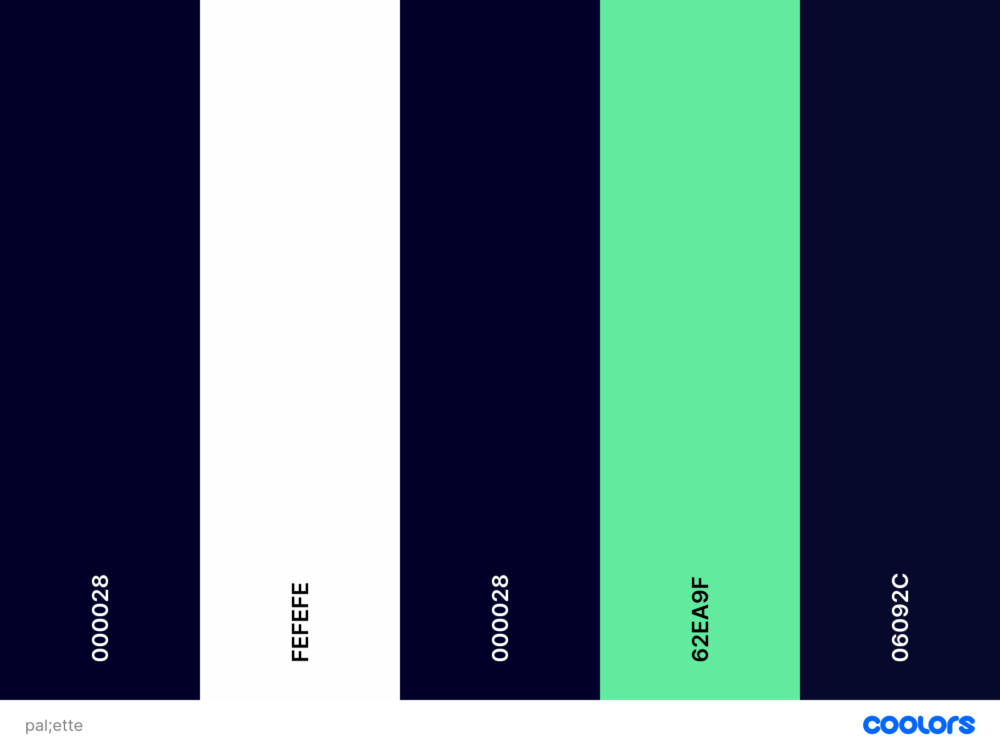

Overview
Purpose
The purpose of this website is to share my personal top five favorite retro video games with a broader audience. The site will serve as a platform to celebrate classic games, providing a simple, organized way for visitors to discover new titles or reminisce about old favorites. By featuring a dedicated page for each game, I can delve into the details that make each title special, including its story, gameplay mechanics, and my personal connection to it. This project is a fun way to practice and demonstrate web development skills while creating content I am passionate about.
Audience
The target audience includes retro gaming enthusiasts, casual gamers looking for classic recommendations, and anyone interested in the history of video games. The site is designed to be accessible and easy to navigate for all users, regardless of their familiarity with the games.
Branding
Website Logo
A stylized 8-bit or pixelated controller icon to evoke the retro gaming theme.
Style Guide
Color Palette
Inspired by classic game consoles and pixel art, the color palette will use a dark, nostalgic base with bright, punchy accents.
Palette: Dark Charcoal, Neon Blue, Pixel Red, Classic Yellow, Retro Teal
Typography
The typography will use a mix of a clean, modern font for body text and a retro-inspired pixel font for headings to maintain the theme.
Heading Font: 'Press Start 2P', cursive;
Paragraph Font: RobotoCondensed, Helvetica, sans-serif;
This is an example of the paragraph font. It should be easy to read on all devices.
Navigation
Site Map
Content
Home Page
An introduction to the website and my personal definition of a "retro game." This page will feature a brief, engaging description of the project and what visitors can expect to find. It will also serve as the main hub for navigating to the individual game pages.
Site Page
This page will be dedicated to displaying and describing the top 5 retro games. Each game will have its own section with a brief description, personal reflection, and possibly media like screenshots or a video clip. This is the core of the website's content.
Contact Page
On this page, visitors will find information on how to contact me. This could include a simple contact form, an email address, or links to social media profiles.
Wireframes
Wireframes for the home page, site page, and contact page.